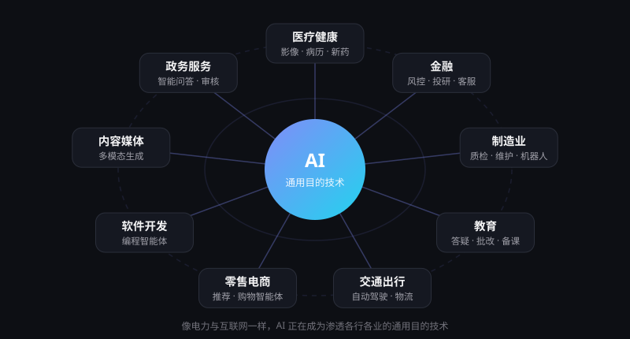

行业应用：AI 正在改变的九个领域
2025 年已有 88% 的受访企业组织在使用 AI。从医院到工厂，从课堂到道路，下面梳理九个行业的典型场景、带来的价值，以及落地时需要注意的问题。
AI 是一种"通用目的技术"
经济学家把蒸汽机、电力、互联网这类能渗透几乎所有行业的技术称为通用目的技术。它们的影响不在于某一个产品，而在于重塑整个生产方式。
AI 正在走同样的路：同一个大模型，既能帮医生整理病历，也能帮工程师写代码、帮客服回答问题。数据显示，2025 年已有 70% 的组织至少在一项业务职能中使用生成式 AI；我国规模以上工业企业的 AI 应用普及率也已超过 30%。
不过，智能体在绝大多数业务职能中的部署率仍是个位数——从"用 AI 辅助"到"让 AI 办事"，大多数行业才刚刚起步。

九大行业详解
每个行业按"典型场景"与"价值与注意"两部分展开。
从辅助诊断到新药研发
典型场景
- 医学影像辅助阅片与病灶筛查
- 病历与随访记录自动生成
- 蛋白质结构预测与药物分子设计
价值与注意
缓解医生文书负担、提升基层诊疗能力；但诊断责任仍在医生，需严格的临床验证与隐私保护。
更聪明的风控与服务
典型场景
- 反欺诈与信贷风险评估
- 投研资料检索、财报摘要与研报辅助
- 智能客服与合规审查
价值与注意
提升效率、覆盖长尾客户；模型决策需可解释、可审计，警惕"幻觉"进入关键结论。
智能工厂与柔性生产
典型场景
- 视觉质检与缺陷识别
- 设备预测性维护与排产优化
- 人形机器人参与装配与搬运
价值与注意
我国规上工业企业 AI 应用普及率已超 30%；落地难点在于数据采集、产线改造与投资回报测算。
因材施教的 AI 助教
典型场景
- 个性化答疑与学习路径推荐
- 作业批改与学情分析
- 教师备课与课件生成
价值与注意
让优质教育资源更普惠；需防止学生过度依赖，学校也需要明确的 AI 使用规范。
自动驾驶走上街头
典型场景
- 城市 Robotaxi 无人驾驶出租车
- 乘用车高阶辅助驾驶
- 干线物流、港口与矿区无人运输
价值与注意
有望减少人为事故、降低物流成本；安全冗余、法规责任认定与极端场景仍是关键挑战。
从推荐到购物智能体
典型场景
- 个性化推荐与智能搜索
- 商品文案、图片与短视频自动生成
- 代客比价、下单的购物智能体
价值与注意
提升转化与运营效率；当智能体替用户做决定时，商家需重新思考数据开放与品牌触达方式。
AI 最先"上岗"的行业
典型场景
- 代码补全与自然语言生成代码
- 编程智能体自主修复缺陷、编写测试
- 代码审查与遗留系统迁移
价值与注意
顶尖模型在真实代码问题基准上已接近人类基线；但仍需人工审查，安全与可维护性不能交给 AI 单独把关。
人机协作的创意生产
典型场景
- 文案、配图、配音与视频生成
- 多语种翻译与本地化
- 新闻素材整理与事实核查辅助
价值与注意
大幅降低创作门槛；版权归属、深度伪造与内容标识是必须面对的问题。
让办事更简单
典型场景
- 政策咨询与办事指引智能问答
- 公文辅助起草与材料审核
- 城市治理中的事件识别与调度
价值与注意
提升服务效率与群众体验；必须保障数据安全，关键决策保留人工复核。
企业落地 AI 的五步法
多数企业已经"用上"AI，但真正产生规模收益的仍是少数。以下是被反复验证的落地路径。
| 步骤 | 关键动作 | 常见误区 |
|---|---|---|
| 1. 找场景 | 从高频、规则清晰、可衡量的环节切入 | 一上来就追求"全面智能化" |
| 2. 备数据 | 梳理知识库与业务数据，明确权限与脱敏规则 | 忽视数据质量，指望模型"自己学会" |
| 3. 小步试点 | 选一个团队试点，设定基线指标对比效果 | 只看演示效果，不做量化评估 |
| 4. 人机协同 | 设计人工审核节点，明确责任边界 | 让 AI 直接对外输出关键结论 |
| 5. 规模推广 | 沉淀流程与工具，培训员工，持续监控 | 上线即结束，缺少运营与迭代 |